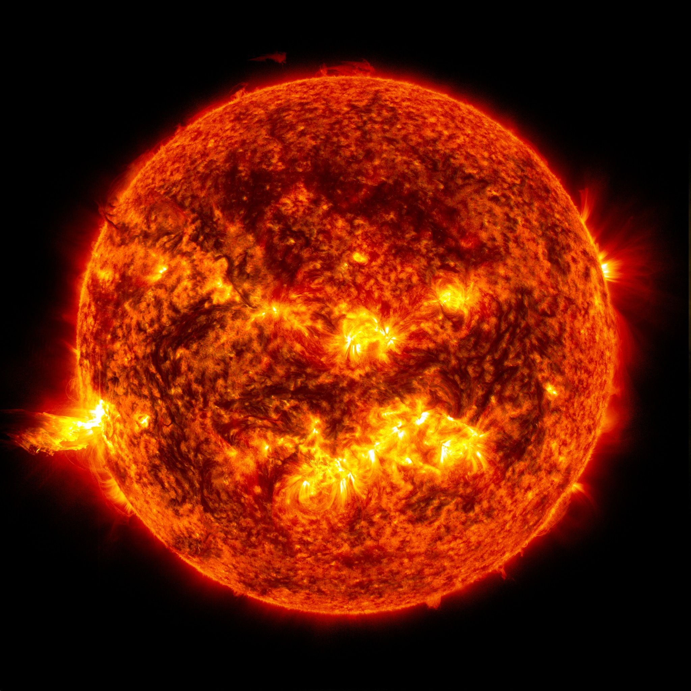

Pluto
You have chosen Pluto, tiny and cold that walks a very different path. .
A Black Hole
You have chosen a Black Hole, very misunderstood but dangerous nonetheless.

The Earth
You have chosen The Earth, tiny in the scale of things, but capable of great things.
White Dwarf
You have chosen White Dward, small dense and capable of pulling in very large forces .
Helix Nebula
You have chosen The Helix Nebula, well repsected and maybe even feared>
- 
The Sun
You have chosen The Sun, sturdy and capable, but very hard to get close to.
Pulsar
You have chosen Pulsar, young, radiates energy, and very unpredictable .
Constellations
You have chosen Constellations, an enigma and capable of bringing together unlikely suspects.
Galaxy
You have chosen Galaxy, an enigma capable of expanding the minds .
The Moon
You have chosen The Moon, trustworthy and dependable, but not above a little mischief.